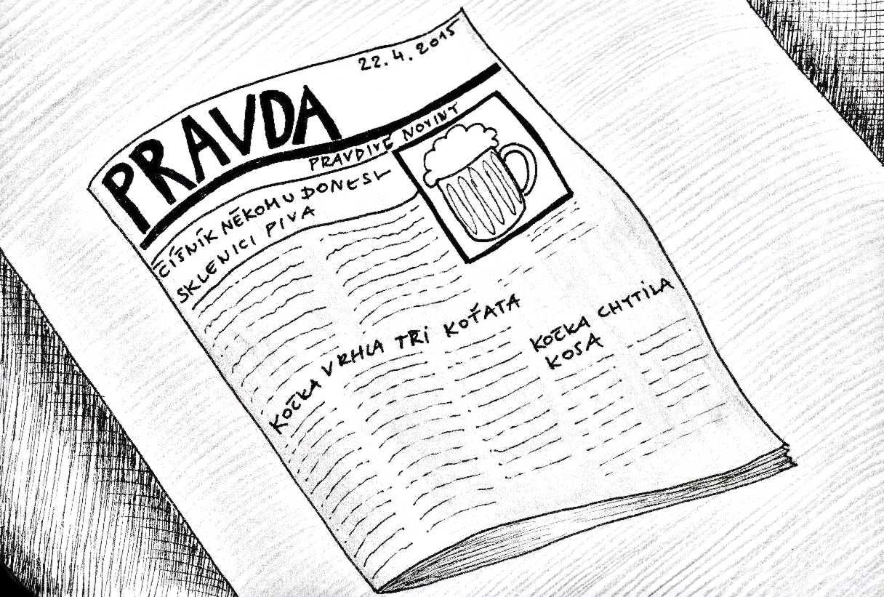

« předchozí článek | obsah čísla
Jsme na ně příliš zvyklí, takže jsme je přestali vnímat jako každodenní div. Už to je zázrak, že každého rána vyjdou, i když se den předtím zhola nic nestalo; ale tento div je redakční tajemství, a já hodlám psát o novinách ze stanoviska čtenáře. Někdy i čtenář v náhlém záblesku uvidí podivuhodnost novin; mně například se to stalo v Ballinluig, nebo ne v Ballinluig, v Crianlarich to bylo nebo v Tyndrum, ale ani v Tyndrum ne; bylo to nejspíš v Mallaig, protože bylo při tom moře, a já jsem si tedy koupil číslo nevím už kterých novin do vlaku. Když jsem je rozevřel energickým rozpažením, padly mé oči na zprávu: V Českých Budějovicích utraceno pět tisíc koček.
Uznejte: je-li člověk ve vlaku v Mallaig, je připraven na cokoli spíše než na České Budějovice nebo na představu pěti tisíc koček. Musel jsem zavřít oči, abych strávil tento úder událostí. Kdybych místo novin rozevřel nějaký román, věděl bych po chvíli, na čem jsem a co asi přijde; ale žádný romanopisec by nevymyslil fantastickou představu pěti tisíc koček a nevzpomněl by si zčistajasna na České Budějovice. Setkat se v Mallaig s Českými Budějovicemi je div; nalézt na jediné stránce pana MacDonalda a pět tisíc koček je něco fantastičtějšího než Ali Baba a čtyřicet loupežníků; a dívá-li se k tomu člověk na Atlantický oceán, je překonán touto divou koexistencí všeho, co jest, totiž politiky, koček, moře, socialismu a Českých Budějovic. Tím se mu rázem zjeví rozsáhlost světa i podivuhodnost novin v krátkém a úžasném zablesknutí.
Promiňte, že zůstanu ještě u těch koček. Jsem poněkud znalec koček a mohl bych dlouho vypravovat o kočkách v Nottinghillu a Janově, o kočkách benátských a pařížských, o chovu koťat, o tom, jak si získati důvěru koček, a mnohé jiné věci. Nuže, nikdy nenajdete v novinách zprávu, že kočka chytila kosa či vrhla tři koťata; vždy ji tam potkáte ve zvláštním, neobvyklém a často i děsivém osvětlení, jako například že vzteklá kočka pokousala listonoše, že nějaký učenec objevil kočičí sérum, že v Plymouth nebo kde se narodila devítiocasá kočka nebo něco podobného. Stejně tak nenajdete v novinách, že číšník někomu donesl sklenici piva, nýbrž že zabil svou milou nebo že vypukla stávka číšníků. České Budějovice nevejdou do novin ve svém pokojném bytí; musí tam být vraždění koček nebo aspoň volby, aby se toto vážné město zjevilo světu v jakémsi vzrušujícím a tragickém přísvitu. A čtu-li v novinách, že nějaký poslanec pronesl řeč, věřím předem, že to je něco stejně zvláštního a dramatického, jako když vzteklá kočka pokouše listonoše nebo číšník zabije svou milou.
Tedy tím chci říci asi to, co znepokojilo už Chestertona, že totiž svět novin je udělán ze samých výjimečných událostí, neobyčejných případů a často i divů a zázraků. Je-li v novinách řeč o domu, tedy se tam nepraví, že dům stojí, nýbrž že hoří nebo že se zřítil nebo je aspoň největší na světě nebo se vůbec nějakým mimořádným způsobem vyznamenal mezi všemi domy, co jich kde je. Číšník je napínavá osobnost, jež zabíjí svou milou, kasír prchá se svěřenými penězi, láska vede fatálně k tomu, aby se z mostu Legií skákalo do Vltavy, auto je nástroj sloužící rekordům, srážkám a přejíždění dítek či starých dam. Vše, co jest, jeví se v aspektu dramatickém a poněkud alarmujícím. S každým ranním vydáním novin se svět přerodí v divočinu, kde číhají nesčetná překvapení, nebezpečí a epické příhody.
Avšak noviny vám neohlašují palcovými písmeny, že vyhořela Trója nebo že Herodes z důvodů veřejné hygieny kázal vyvraždit pět tisíc nemluvňat. Dočtete se tam o krvavém boji tří zámečníků ve Štěpánské ulici, ale nepovídá se vám o krvavých bojích Caesara s Galy. Nestačí, aby věc byla krvavá nebo hořící; musí být nová. Nestačí, aby mluvila k imaginaci; musí být především co možná dnešní. Noviny mohou psát, že dnes, 14. prosince 1924, jsou tomu zrovna tři tisíce let, co vyhořela Trója; není-li to zrovna a na chlup dnes, nemá to v novinách co dělat. Svět novin, podobně jako svět divoké zvěře, existuje pouze v současnosti; vědomí novin (lze-li tu mluvit o vědomí) je omezeno na čirou přítomnost, sahající od ranního vydání do večerního nebo obráceně. Čte-li člověk týden staré noviny, je mu, jako by se probíral v Dalimilově kronice; nejsou to už noviny, nýbrž památka. Noetický systém novin je aktuální realism: jest, co je právě nyní; extra praesentiam non est existentia; ergo bibamus.
Představte si, jak byste se otřásli, kdyby vám noviny přinesly dejme tomu rok starou řeč poslance Petrovického. Mohou ji přinést s poznámkou, že „dnes je tomu právě rok“ nebo že „tato zlatá slova platí i dnes“; ale nějaké „dnes“ tam musí být, nebo by se vám zdálo, že se vám vesmír řítí na hlavu nebo že kategorie času zešílela; bylo by to téměř nepřežitelné. Jeden moralista (byl to myslím pan Gamma) napsal, že by noviny měly místo aktualit přinášet aeternality a perpetuality, dávaje zřejmě přednost věcem věčným před věcmi časnými. Tedy například místo Čičerinovy řeči měly by otisknout Ciceronovu řeč pro Plancia, jež nesporně není aktuální. Místo konfúzní situace v parlamentě by mohly přinést výňatky z Konfucia, a místo poslední vraždy dejme tomu kapitolu z Chelčického Sítě víry. Přiznávám se, že bych takové noviny (jaké snad vycházejí v nebi) nechtěl redigovat; nevěděl bych, proč mám zrovna dnes tisknout řeč pro Plancia místo třetí řeči proti Verrovi a proč dát z hlediska věčnosti zrovna dnes přednost Konfuciovi před Platónovým Faidónem. Je-li tam expozé ministrovo, není tam proto, že je lepší a důležitější pro mou duši než Kázání na hoře, nýbrž proto, že se na rozdíl od Kázání na hoře stalo včera. Krádež kožichu v kavárně není zajisté senzačnější než Napoleonova abdikace, ale přihodila se včera. Co platno, současnost má pro lidi zvláštní a tajemnou přitažlivost; lidé běží v houfech se podívat na dům, kde krejčí zabil cihličkou svou sedmičlennou rodinu, ale neběží se v houfech podívat do Štěrbohol, kde v sedmileté válce padlo já nevím kolik tisíc lidí i s generálem Schwerinem. Fanatický zájem o přítomnost je jedno z tajemství života; je to také jedno z tajemství novin. Musí to být nové, ale nesmí to být syrové a neznámé. Džungle událostí, jež se otevírá každého rána v novinách, musí být prostoupena ušlapanými a známými pěšinami, jako například: Byl dopraven na ochrannou stanici. – Obyvatelstvo bylo vzrušeno zprávou, jež se rozlétla rychlostí blesku1. – Důstojný průběh schůze nebyl ničím porušen. – Škoda je značná. – Caveant consules!
Každé takové ustálené rčení má svou estetickou hodnotu. Je to jakýsi oddech v přívalu novosti, je to jako refrén, jejž čtenář může zapěti s sebou. Je to hotový rám, do něhož nová událost hladce zapadne, čímž je zároveň uspokojivě vyřízena. Sotva se vynoří, přestává být něčím nebývalým.
Jel jsem onehdy na plošině tramvaje. Najednou něco se zamotá na kolejích, řidič strašně zasakruje a zběsile zvoní, vůz se rázem zastaví, všichni letíme řidiči na záda; z ničeho nic tlačí se na kolejích chumel lidí, jako by z dlažby vyrostl, dva strážníci tahají jakýsi těžký balík do průjezdu, na smrt bledý řidič si utírá studený pot a shání strážníka; je to divný, syrový chaos, který se pomalu a jakoby horečně rozplétá; celý den mi pak bylo nanic. A hle, druhého rána čtu v novinách: „Včera o jedné hodině byl na Národní třídě povalen jedoucím tramvajovým vozem František Š., účetní z Prahy VII. Lehce zraněný byl dopraven na ochrannou stanici, kde se mu dostalo prvního ošetření.“ Tak, to je všecko; a já byl vykoupen z mučivého chaosu, který jsem zažil; najednou jsem viděl, že případ je chválabohu docela jednoduchý. Nezbylo v něm pranic z horečného zmatku. Dostalo se mu prvního ošetření, to jest normalizace. Byl-li před stvořením světa chaos, byl jenom proto, že tehdy ještě nebylo žádných novin, které by celou věc stylizovaly asi takto: „Ani včera nebyl důstojný průběh věčnosti ničím porušen. Kvečeru se rychlostí blesku roznesla zpráva, že byl na Maninách stvořen Kosmos. Naštěstí se tato zpráva do uzávěrky listu nepotvrzuje. Přesto upozorňujeme povolané kruhy na nekalé rejdy, jež by mohly dosavadní chaos vážně ohroziti. Caveant consules!“
Úhrnem tedy je možno říci, že krásná literatura je vyjadřování starých věcí věčně novým způsobem, kdežto noviny jsou vyjadřování věčně nové skutečnosti způsobem ustáleným a neměnným. Noviny, pokud se nepletou do politiky, mluví o věcech jedinečných a konkrétních. Básník praví, že „každý zabíjí, co miluje“. Noviny naproti tomu tvrdí, že v čp. 891 zabil číšník Václav Zajíček svou milou, 27letou Terezii Veselou. Básník se může rozezpívat nad sněženkami vůbec; ale noviny mohou přinést jen určitou, asertorickou zprávu, že včera ve 3 hod. 15 min. se rozevřela u Podbaby první sněženka a že zpráva o tom se rychlostí blesku roznesla po Praze. Ovšem i v novinách se někdy octne kousek literatury nebo poezie; ale to není proto, že by literatura do novin nějak zvlášť patřila, nýbrž proto, že v novinách je všechno.
Přesto mají noviny něco společného s krásným písemnictvím, například okolnost, že na rozdíl od vědeckého poznání jsou celkem nezávislé na skutečnosti. Stalo se mi, že mě anglický žurnalista z nevím jaké výstřední zvědavosti interviewoval o mém rodišti a jiných odlehlých věcech. Den nato jsem se s dětinským úžasem dočetl v jeho novinách, že jsem se zrodil v divoké horské samotě Obřích hor, v chudobné rodině drsných a zbožných horalů... Slabě jsem protestoval jinému muži od novin, že to není pravda. „Víte to jistě?“ řekl ten muž. „Snad máte pravdu; ale takhle je to zajímavější.“ – Od té doby čtu noviny s hlubším pochopením a požitkem; najdu v nich vzrušující věci, třeba expozé zahraničního ministra, zprávu o zahájení výstavy drátěných sít v Rožmitále nebo senzační odhalení, že v Národním byla dávána nová česká činohra, a myslím si okouzlen: snad to vůbec tak nebylo, ale takhle je to zajímavější. Přitom dlužno uznati, že i když noviny (ze zásadního důvodu svobody tisku) jsou nezávislé na skutečnosti, užívají svého práva na fikci velmi umírněně; například onen anglický žurnalista mohl stejně dobře napsat, že jsem se zrodil vypadnuv z borové šišky v podobě okřídleného semínka nebo že jsem připlul po labském vodopádu leže v košíku; nicméně omezil se na jistou retuši skutečnosti v míře, jež naprosto neuráží schopnost obyčejného čtenáře věřit psanému slovu. Noviny mohou psát cokoliv s předpokladem, že to je dosti všední a obyčejné, aby tomu čtenář bez námahy věřil. Mohou se odchylovat od skutečnosti, ale musí se to dít tak jemně, aby čtenář nevykřikl, že tohle je nesmysl a že si z něho noviny dělají blázna. Následkem tohoto ohledu k pohodlnosti a skrovné fantazii čtenářů odchylují se noviny od skutečnosti daleko méně, než by se mohlo teoreticky předpokládat; ba často se jí byť jen zběžně a nepřesně – přidržují, neboť snazší je reprodukovat skutečné věci než si vymýšlet věci pravděpodobné.
Často se vytýká novinám anonymita; myslím, že neprávem. Dlužno uvážit, že noviny nejsou většinou psány novináři, nýbrž novinami. Ustálená rčení, která jsem už uváděl, nejsou majetkem jednotlivce, nýbrž celého cechu. Visí-li někde tabulka „Znečišťování tohoto místa se trestá“, není pod touto obecnou myšlenkou podepsán její autor; a protože noviny namnoze vznikají z obecných vět, obecných názorů a obecných rčení, jsou stejně anonymní jako výstražné tabulky nebo úřední formuláře. Kdybyste nutili autora úvodníku, aby se na konci svého článku podepsal, řekl by, že by to v tom případě buď nepsal vůbec, nebo že by se pokusil napsat to lépe. Anonym v novinách není muž s maskou, protože je to muž bez tváře. Jen nepodepsaný člověk může napsat: „Průběh schůze byl důstojný.“ Podepsaný autor by pod ztrátou osobní upřímnosti musel napsat: „Průběh schůze byl neobyčejně otravný; pokud mne se týče, raději bych šel pěšky až do Vysočan; divím se, že někoho tak baví povídat věci, které už každý zná.“ Jak vidíte, tento podepsaný muž by byl velmi špatným novinářem; a je příliš mnoho věcí, o kterých nelze psáti než s potlačením vlastní osobnosti.
Jsou v novinách věci, které nečte nikdo, jako je například úvodník; dále věci, které čte jen někdo, jako je Národní hospodář; a věci, které čte každý, jako je Soudní síň. Avšak bylo by omylem vyhodit prostě z novin věci, které nikdo nečte. Lid chce mít v novinách věci, které nečte, jako chce mít ve městě budovy, do kterých nechodí, například muzea. V novinách musí být zkrátka vše, dokonce i básně a statistika lotyšského obchodu; ale není to tam pro těch několik neuvěřitelných jednotlivců, kteří si to snad přečtou, nýbrž pro ty desettisíce průměrných a zaručených čtenářů, kteří to rozhodně přeskočí, uspokojeni prostě tím, že to tam je. Pokud mne se týče, netroufám si s úspěchem koupit ani půl tuctu kapesníků; přesto však hledám každého rána, jaká je v Liverpoolu nálada na bavlnu báze Fully Middling nebo Sakellaridis a má-li Strongsheets v Londýně zase dvě nuly; nevím sice, co je to Strongsheets, ale dává mi to libý pocit světovosti. Nezajímám se příliš o události ve Španělsku, ale jsem potěšen, že kdybych chtěl, mohl bych o nich vědět více než o událostech v Kardašově Řečici. Nejsem nijak zfanatizován pro Mexiko, ale prostřednictvím novin je mi Mexiko méně záhadné a odlehlé nežli soused na druhé straně zdi. Jsou mi známy příčiny revoluce v Mexiku, ale nevím zhola nic o příčinách hádky u nejbližšího souseda. Tento stav dnešního člověka se nazývá světoobčanstvím a vzniká ze čtení novin.
Zvláštním požitkem čtenářovým je, najde-li v novinách nikoli věci, o kterých neví, nýbrž věci, o kterých ví nebo při kterých dokonce byl. Nikdy nečtu s tak náruživým zájmem o požáru, který jsem neviděl, jako o požáru, při kterém jsem náhodou přikukoval od počátku až do konce; a musím se přiznati, že kdyby o něm noviny nic neměly, cítil bych se jaksi uražen a osobně dotčen; považoval bych za nešetrnost, že událost, která mne tak poutala svým pyromanickým kouzlem, nestojí novinám za špetku zájmu. Čtenář novin považuje sebe sama prostě za veřejnost; a čte-li, že „požár přilákal množství diváků“, cítí s uspokojením, že nebyl přehlédnut.
Lhostejně čtu, že byla v Krumlově vyhlášena kontumace psů; prostě nic mi po tom není, neboť jakživ jsem nebyl v Krumlově. Avšak čtu s požitkem a pochopením, byla-li vyhlášena kontumace v Hořici nebo dokonce v Glasgowě, neboť byl jsem na obou místech, následkem čehož mám k celé události jistý osobní a empirický vztah. Nevím, není-li nejsvůdnějším kouzlem novin na rozdíl od literatury, že poskytuje tak široké pole osobním vztahům. Příjemně mne vzrušuje, je-li v novinách řeč poslance Lukavského, protože ondyno, počkejte, kde to bylo, nu, to je jedno, jsem viděl na vlastní oči poslance Lukavského. Jsem zaujat náhlou smrtí starého penzisty na Malé Straně, protože bydlím na Malé Straně. Zajímá mne obecní deficit Jindřichova Hradce, protože jsem byl v Jindřichově Hradci. S pochopením pročítám zprávu o insolvenci Jana Holzbacha ve Znojmě, protože znám osobně nějakého jiného Holzbacha, a tak dále. Noviny se dovolávají osobních citů čtenáře daleko hojněji než dejme tomu milostné básně; abych to řekl ve slohu milostných básní, tedy hrají hluboce na strunách duše.
Bylo by nejvýš poučné pojednat o rozdílech mezi novinami různých národů, různých politických stran a tak dále; ale k takové nejméně třísvazkové studii in folio se mi nedostává schopností a papíru. Píši o novinách vůbec, mysle zároveň na Times a na Posla od Čerchova; ale i tento úkol je neobyčejně složitý, takže se ho zříkám, sotvaže jsem jej nakousl. Muselo by se důkladně pojednati o všem, z čeho noviny sestávají; například úvodník zajisté neproudí z živé lidské zvědavosti, nýbrž z kázavosti a zvláštní schopnosti naslouchat pravidelnému kázání. Naproti tomu soudní síň je jakási náhražka za to, že kdysi celý kmen seděl obřadně kolem ohně, když se vynášely rozsudky; denní zprávy do jisté míry zastupují ranní rozpravu sousedek o tom, co se stalo nového od večerní rozpravy, a tak dále. Každá rubrika novin má původ jiný a zajisté prastarý; a je s podivením, že žádný sociolog se dosud nepokusil o rozbor tohoto slepence pravěkých motivů poznávacích, rituálních, juridických, společenských a jiných, jež se slily dejme tomu v Národní politiku nebo Reformu.
Myslím skutečně, že noviny jsou staré jako lidstvo. Herodot byl novinář a Šeherezáda není nic jiného než orientální symbol večerního vydání novin. Pravěcí lidé snad zaznamenávali památné události stavěním megalitických staveb; bylo to písmo monumentální, ale pracné. Egypťané tesali své noviny na obeliscích a chrámových stěnách. Představte si, že by se každého rána rozváželo z Václavského náměstí šedesát tisíc obelisků a že by každý exemplář muselo táhnout šedesát volů. To je asi příčina, proč ve starém Egyptě nedošlo novinářství většího rozmachu.
Rovněž za svého druhu novináře lze považovati různé rapsódy, aoidy, skaldy a bardy. Iliada byla poměrně novinkou, když ji přednášel sám Homér, a později byla omíláním starých věcí; v obojím se podobá dnešním novinám. Neboť je jen polovina pravdy, že noviny slouží sdělování novinek; stejnou pravdou je, že slouží sdělování starých známých věcí. Je snad jakousi novinkou, že včera pronesl velkou řeč pan Herriot, ale fakt, že předseda vlády obyčejně mluvívá, není novinkou. Je novinkou, že včera někdo ukradl kožich v kavárně Union, ale fakt, že se kradou kožichy, je starý a vyskytoval se už v dobách jeskynních. Noviny nás denně upomínají, že se dějí ve světě nové věci, ale že se dějí pořád a pravidelně. Noviny nám odhalují věcnou kontinuitu života; nebo, řečeno Gammovými termíny, skoro všechny aktuality jsou vlastně perpetuality.
Kdyby v zítřejších novinách byla děsivá zpráva, že čínská armáda oblehla Curych, bude tam také zprávička, že se v Ovocné třídě srazil ruční vozík s tramvají; tedy chválabohu, svět se nezměnil. Kdyby večerní vydání přineslo depeši, že právě nastal konec světa, přinese také sdělení, že Malá Strana trpí nedostatkem veřejných záchodků a že je třeba neprodlené nápravy. A kdyby noviny ohlásily, že z lodžie Národního divadla právě zazněly trouby posledního soudu, neopomenou ohlásiti, že se k věci ještě vrátí podrobným referátem svého hudebního i soudního referenta. Svět novin je stále nový, ale neměnný.
Koneckonců, pro filozofickou mysl číst noviny je činnost stejně kontemplativní jako dívat se na západ slunce nebo na plynoucí řeku. Noviny mají periodicitu a neproměnlivost přírodních úkazů; místo aby byly šestou velmocí, jsou spíše čtvrtou přírodní říší. Studovat její zákony a stanovit její čeledě, rody a druhy nemůže býti úkolem tohoto článku, jenž chtěl být jen chválou novin; proto také nesmí být vyčerpávající, neboť chvála se nemá nikdy vyčerpat do poslední kapky.
« předchozí článek | obsah čísla
[1] : Tj. 3133 m za vteřinu. ↩